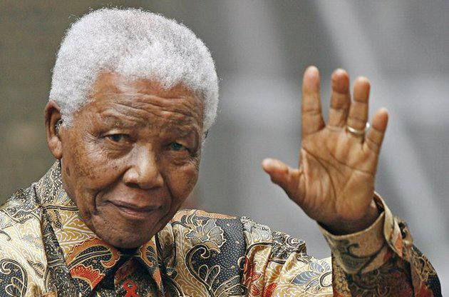

Жанубий Африканинг собиқ раҳбари Нельсон Мандела ўз эсдаликларида ёзади:

“Давлатга раҳбар бўлганимдан сўнг шаҳар айландим. Бир ошхонага кирдик. Ҳамма жойлашиб, маъқул овқатини буюрди. Таомни кутиб турган пайтимиз кўзим бир четда ўтирган кишига тушди. У ҳам кутиб турганди.
Бояги кишини чақириб келишларини буюрдим. У киши келди. Ёнимга ўтиришини айтдим. Таом келди. Бирга жим овқатлана бошладик. Ҳалиги киши тер тагида қолди. Қўллари қалтирар, юзидан тер шариллаб оқар, овқатини оғзига олиб бора олмас эди.
Овқатдан сўнг у киши кетди. Шунда танқўриқчим менга: “У киши касал шекилли. Тузук овқат ея олмади”, деди. Мен: “Йўқ! У касалмас. У мен қамалган қамоқхона қўриқчиси эди. Кўпинча менга азоб беришгандан сўнг чанқаб, сув сўрардим. Ҳар сафар шу киши келиб устимдан бавл қиларди. У бугун менинг қамашим ва унга ҳам шундай азоб беришимдан қаттиқ қўрқди. Аммо бу менинг ахлоқим эмас. Чунки қасос давлатни бино қила олмайди. Халқларни бино қиладиган нарса авфдир”, дедим.